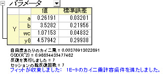

Origin 2018bから、積分を使って陰函数を定義することができます
例えば、複数の積分を利用してフィット関数を作成するとき、
それぞれのパラメータの詳細については、LabTalkを利用した積分フィットをご覧ください。
Origin バージョン8.6ではフィット関数ビルダは1つの積分関数ののみをサポートしていました。このような複雑なコードを使わなくても、フィット関数オーガナイザを使うことで、フィットをすることが来ます。
このチュートリアルでは、2つの積分からなる関数をフィット関数オーガナイザを使ってフィットさせます。2つ以上の積分を利用することも可能です。
必要なOriginのバージョン: Origin 8.6 以降
Origin 2018bから、積分を使って陰函数を定義することができます |
このチュートリアルでは、以下の項目について解説します
フィッティングモデルは次の式で表されます。
フィット関数には4つのパラメータがあり、そのうち3つを被積分関数に受け渡し、独立変数を上限として積分を行います。
y=integral(polyint, -5, x, a)-integral(gaussint, -inf, x, b, wc)+y0
LabTalk関数を使った積分フィットにもあるように、x、a、bそしてwc被積分関数のパラメータになります。
function double polyint(double t, double ia) { return ia*t ; } function double gaussint(t, ib, iwc) { return ib *t* exp(-(t)^2/iwc^2) ; }
次のデータ をOriginの新しいワークシートにコピー&ペーストします。
| X | Y |
|---|---|
| -3 | 2.47613 |
| -2.6 | 2.24016 |
| -2.2 | 2.01543 |
| -1.8 | 1.83094 |
| -1.5 | 1.85038 |
| -1.1 | 2.17725 |
| -0.9 | 2.44967 |
| -0.7 | 2.61423 |
| -0.5 | 3.02305 |
| -0.3 | 3.23057 |
| -0.1 | 3.37822 |
| 0.1 | 3.2827 |
| 0.3 | 3.18775 |
| 0.5 | 2.86194 |
| 0.7 | 2.69104 |
| 0.9 | 2.39315 |
| 1.4 | 2.04046 |
| 1.8 | 1.85287 |
| 2.2 | 1.85325 |
| 2.6 | 2.20569 |
Y列を選択し、Ctrl + YキーでNLFitダイアログを開きます。定義した関数を選び、フィットボタン をクリックしてフィットを行います。
をクリックしてフィットを行います。
